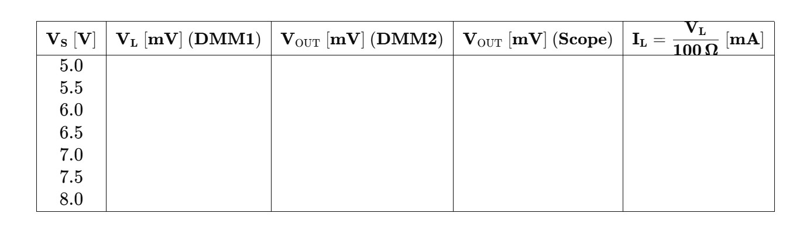
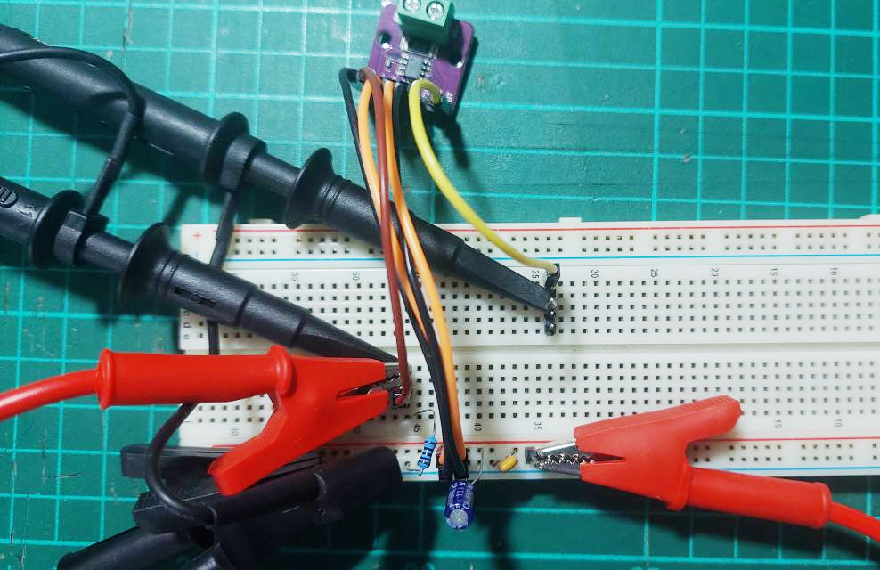
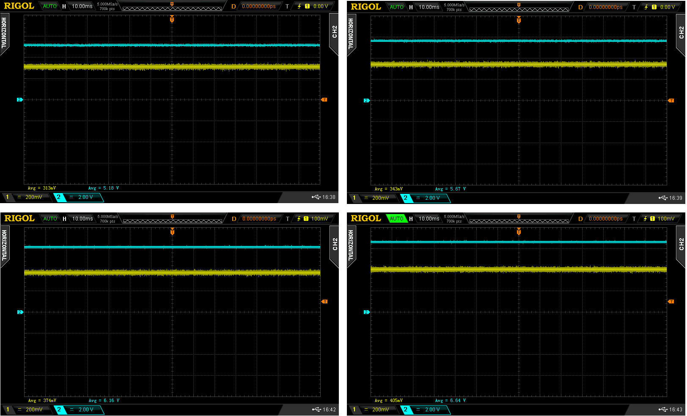
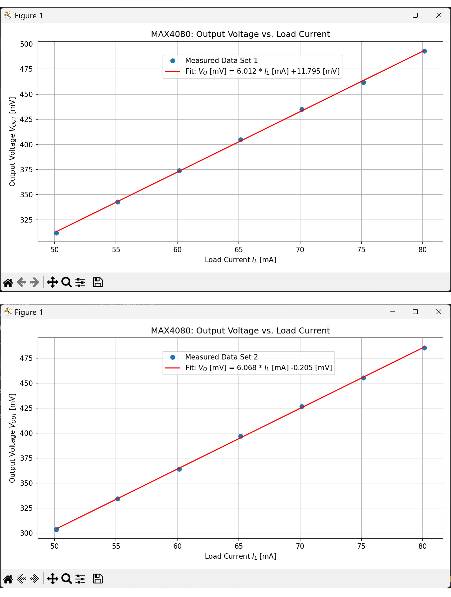

การทดลองวัดกระแสโดยใช้โมดูล Current Sense Amplifier - MAX4080S#
Keywords: Current Sense Amplifier, MAX4080S, Linear Regression, Python
▷ การทดลองใช้งานโมดูล MAX4080#
ไอซี MAX4080 จัดอยู่ในประเภท Current Sense Amplifier CSA) เหมาะสำหรับการวัดกระแสที่ฝั่ง High-side (ระหว่างแหล่งจ่ายไฟและโหลด) และใช้สำหรับการวัดกระแสไฟฟ้าแบบ DC โดยใช้ตัวต้านทานที่มีค่าความต้านทานต่ำ (Shunt Resistor) ซึ่งไอซีจะทำหน้าที่แปลงแรงดันตกคร่อมที่ตัวต้านทานดังกล่าวให้เป็นแรงดันเอาต์พุต
วัตถุประสงค์
- เพื่อศึกษาการทำงานของโมดูล MAX4080S ในการวัดแรงดันตกคร่อมที่ Shunt Resistor และขยายเป็นแรงดันที่ขา OUT
- เพื่อศึกษาความสัมพันธ์ระหว่างกระแสไฟฟ้าในโหลดกับแรงดันเอาต์พุตของโมดูล
- เพื่อวิเคราะห์ความเป็นเชิงเส้นของระบบวัดกระแสด้วยวิธี Linear Regression
อุปกรณ์และเครื่องมือที่ใช้
| รายการ | จำนวน |
|---|---|
| โมดูล GY-408 (MAX4080S) | 1 |
| ตัวต้านทานโหลด () 100Ω ±1% | 1 |
| แหล่งจ่ายไฟ DC แบบปรับค่าได้ | 1 |
| มัลติมิเตอร์ดิจิทัล (Digital Multimeter, DMM) | 2 |
| ออสซิลโลสโคปดิจิทัล (Digital Oscilloscope) | 1 |
| สายวัด/สายจั๊มเปอร์ | ตามต้องการ |
| เบรดบอร์ด หรือชุดทดลองไฟฟ้า | 1 |
โมดูลที่ได้นำมาใช้ในการทดลองคื GY-408 มีไอซี MAX4080S (Gain = 60V/V) และมีตัวต้านทานสำหรับการวัดกระแส 0.1Ω อยู่บนแผงวงจรแล้ว
▷ ขั้นตอนการทดลอง#
-
เตรียมวงจรการทดลอง
- เชื่อมต่อแหล่งจ่ายไฟ DC () กับขา ของโมดูล MAX4080S และต่อ GND ร่วมกันกับวงจร
- เชื่อมต่อแรงดันไฟเลี้ยง กับขา VCC เพื่อใช้เป็นแรงดันไฟเลี้ยงให้โมดูล MAX4080S
- ใช้มัลติมิเตอร์ดิจิทัล วัดค่าความต้านทานของโหลด แล้วจดบันทึกค่าไว้
- ต่อโหลด ขนานกับวงจร โดยให้ปลายหนึ่งต่อกับขา และอีกปลายต่อกับ GND
- ต่อ DMM1 วัดแรงดันตกคร่อมที่ แรงดันตกคร่อม ใช้ในการคำนวณกระแสโหลด เนื่องจากวงจรเป็นแบบอนุกรม
- เชื่อมต่อขา OUT ของโมดูลกับ DMM2 และ Oscilloscope
-
การวัดค่าทางไฟฟ้า
- ใช้ DMM1 วัดแรงดันตกคร่อมที่โหลด ()
- ใช้ DMM2 และ Oscilloscope วัดแรงดันที่ขา OUT ของโมดูล
-
การปรับค่าแรงดันไฟเลี้ยง
- ปรับแรงดันไฟเลี้ยง ที่ป้อนให้กับโมดูลและวงจรตามค่าดังนี้:
5.0V ~ 8.0V (เพิ่มครั้งละ 0.5V) - สำหรับแต่ละค่า ให้บันทึกข้อมูลดังนี้:
- (แรงดันตกคร่อมที่ )
- จาก DMM2
- จาก Oscilloscope
- คำนวณกระแส
- ปรับแรงดันไฟเลี้ยง ที่ป้อนให้กับโมดูลและวงจรตามค่าดังนี้:
-
การบันทึกข้อมูล
- ใช้ตารางต่อไปนี้บันทึกค่าที่วัดได้:

รูป: ตารางสำหรับการบันทึกข้อมูลจากการทดลอง
- การวิเคราะห์ข้อมูล
- สร้างกราฟแสดงความสัมพันธ์ระหว่าง (หรือ ) กับ สำหรับแกนนอนและแกนตั้งตามลำดับ (สามารถเขียนโปรแกรม เช่น ใช้ภาษา Python ในการคำนวณและแสดงรูปกราฟได้)
- ใช้วิธี Linear Regression (การถดถอยเชิงเส้น) ซึ่งเป็นเทคนิคทางคณิตศาสตร์และสถิติที่ใช้สำหรับ หาความสัมพันธ์เชิงเส้นระหว่างตัวแปรอิสระกับตัวแปรตาม และสามารถนำมาใช้กับอินพุต และเอาต์พุต ของโมดูล MAX4080S
- เปรียบเทียบกับค่าอัตราขยาย (Gain) ของ MAX4080S ซึ่งควรประมาณ 60V/V:
จากการนำข้อมูลจากการทดลองไปใช้ในขั้นตอน Linear Regression จะได้สมการในรูปแบบต่อไปนี้
โดยที่:
- = ความชันของเส้นตรง (Slope) ซึ่งจะต้องใกล้เคียงกับค่า Gain
- = ค่า Offset (Intercept)
การใช้ Linear Regression จากการทดลองมีข้อดีหลายอย่าง เช่น เปรียบเทียบค่าความชันที่ได้กับ Gain ที่ควรจะเป็น และชดเชยแรงดัน Offset เป็นต้น

รูป: ตัวอย่างการต่อวงจรทดลองโดยใช้โมดูล MAX4080S

รูป:ตัวอย่างการวัดสัญญาณ (แรงดันไฟฟ้า DC ) ด้วยสโคป สัญญาณช่อง CH1 ได้จากขา OUT ของ MAX4080S และ CH2 ได้จากแรงดันตกคร่อมที่ตัวต้านทาน เทียบกับ GND
▷ ตัวอย่างการวิเคราะห์ผลการทดลอง#
ถัดไปเป็นตัวอย่างโค้ด Python สำหรับการวิเคราะห์ข้อมูลจากการทดลอง
import numpy as np
import matplotlib.pyplot as plt
from scipy.stats import linregress
R_L = 99.31 # measured resistance value of R_L in Ohm
# Three data sets
data_samples_set = [
# V_L [V] and V_OUT [mV]
[ # Measurement with Scope
(4.979, 312),
(5.476, 343),
(5.973, 374),
(6.469, 405),
(6.966, 435),
(7.464, 462),
(7.959, 493),
], [ # Measurement with DMM2
(4.979, 303.5),
(5.476, 334.1),
(5.973, 364.0),
(6.469, 396.8),
(6.966, 426.6),
(7.464, 455.3),
(7.959, 485.1),
]
]
data_set_index = 0 # Set the data set index
data_samples = data_samples_set[data_set_index]
# Split into x (current in mA) and y (voltage in mV)
V_L, V_OUT = zip(*data_samples)
I_L = 1000 * np.array(V_L) / R_L # load current in mA
V_OUT = np.array(V_OUT) # output voltage in mV
# Compute linear regression
a, b, r_value, p_value, std_err = linregress(I_L, V_OUT)
# Print regression results
print(f"Linear Regression: V_out = a * I_load + b")
print(f"a (sensitivity) = {a:.4f} mV/mA")
print(f"b (offset) = {b:.4f} mV")
print(f"R^2 = {r_value**2:.5f}")
# Plotting
plt.figure(figsize=(9, 5))
plt.plot(I_L, V_OUT, 'o', label=f'Measured Data Set {data_set_index+1}')
plt.plot(I_L, a * I_L + b, 'r-',
label=f'Fit: $V_O$ [mV] = {a:.3f} * $I_L$ [mA] {b:+.3f} [mV]')
plt.xlabel('Load Current $I_L$ [mA]')
plt.ylabel('Output Voltage $V_{OUT}$ [mV]')
plt.title('MAX4080: Output Voltage vs. Load Current')
plt.grid(True)
plt.legend(loc='upper left', bbox_to_anchor=(0.3, 0.95))
plt.tight_layout()
plt.show()

รูป: ตัวอย่างการนำข้อมูลที่ได้จากการทดลองมาวิเคราะห์และแสดงรูปกราฟ เปรียบเทียบกราฟที่ได้จากการวัดด้วย Scope (1) และ DMM (2) ตามลำดับ ทั้งสองกรณี ได้ความสัมพันธ์แบบเชิงเส้น และได้ความชันใกล้เคียง 6.0 mV/mA ตามที่เคยระบุไว้ และมีขนาดของแรงดัน Offset สำหรับวิธีการวัด้วยสโคปมากกว่าวิธีการวัดด้วย DMM
▷ กล่าวสรุป#
บทความนี้ได้นำเสนอแนวทางและตัวอย่างการทดลองทางไฟฟ้าสำหรับการใช้งานไอซี MAX4080S (เลือกใช้โมดูล GY-408) และนำข้อมูลที่ได้จากการทดลองมาวิเคราะห์ และแสดงรูปกราฟด้วยโค้ด Python ที่ให้ไว้เป็นตัวอย่าง และผลการทดลองก็เป็นไปตามทฤษฎี
This work is licensed under a Creative Commons Attribution-ShareAlike 4.0 International License.
Created: 2025-05-17 | Last Updated: 2025-05-17